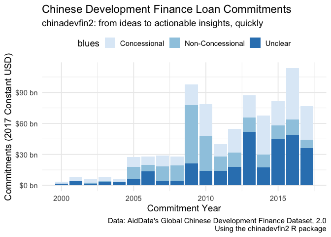

chinadevfin2 is primarily a data package enabling an efficient method for working with AidData’s Global Chinese Development Finance Dataset, Version 2.0 (GCDF 2.0) in R.
About the GCDF 2.0 dataset:
AidData’s summary of the dataset:
AidData’s Global Chinese Development Finance Dataset, Version 2.0. records the known universe of projects (with development, commercial, or representational intent) supported by official financial and in-kind commitments (or pledges) from China from 2000-2017, with implementation details covering a 22-year period (2000-2021). The dataset captures 13,427 projects worth $843 billion financed by more than 300 Chinese government institutions and state-owned entities across 165 countries in every major region of the world. AidData systematically collected and quality-assured all projects in the dataset using the 2.0 version of our Tracking Underreported Financial Flows (TUFF) methodology.
Please see the AidData’s dataset website for full citation details.
If you are unfamiliar with the dataset, the following resources are a great place to start:
- AidData - Policy Report: Banking on the Belt and Road: Insights from a new global dataset of 13,427 Chinese development projects
- AidData - Methodology: Tracking Underreported Financial Flows (TUFF) methodology, 2.0.
- AidData - Dataset Website: Global Chinese Development Finance Dataset, Version 2.0
Relevant Notes
-
chinadevfin2is still under heavy development: Please use accordingly. The initial phase of package development aims to finalize stable versions of the datasets, and will be announced with a new package version release and note. Further development will focus on building helper functions to aid efficient analysis workflows with the dataset. -
chinadevfin2is a personal project: While the package author works as a consultant to AidData this package is a personal project with no official affiliation or sponsorship from AidData. The author built the package for his own own use, but hopes that it can grow into a robust package that can aid researchers, policymakers, and others interested in gaining actionable, empirically-based insights about Chinese development finance lending using the GCDF 2.0 dataset.
Installation
You can install the development version of chinadevfin2 from GitHub with:
# install the `devtools` package if not yet installed
# install.packages("devtools")
# install chinadevfin2 from GitHub
devtools::install_github("t-emery/chinadevfin2")This package will likely never be published on CRAN because the data file sizes are too big.
Example
The core initial functionality of chinadevfin2 is to load the GCDF 2.0 dataset as a tibble using get_gcdf2_dataset():
# load the chinadevfin2 library
library(chinadevfin2)
library(tidyverse)
#> ── Attaching core tidyverse packages ──────────────────────── tidyverse 2.0.0 ──
#> ✔ dplyr 1.1.2 ✔ readr 2.1.4
#> ✔ forcats 1.0.0 ✔ stringr 1.5.0
#> ✔ ggplot2 3.4.2 ✔ tibble 3.2.1
#> ✔ lubridate 1.9.2 ✔ tidyr 1.3.0
#> ✔ purrr 1.0.1
#> ── Conflicts ────────────────────────────────────────── tidyverse_conflicts() ──
#> ✖ dplyr::filter() masks stats::filter()
#> ✖ dplyr::lag() masks stats::lag()
#> ℹ Use the conflicted package (<http://conflicted.r-lib.org/>) to force all conflicts to become errors
# Load the GCDF 2.0 dataset as a tibble, with standardized country names added at the beginning.
get_gcdf2_dataset()
#> # A tibble: 13,427 × 73
#> country_name iso3c country_or_regional aid_data_tuff_project_id
#> <chr> <chr> <chr> <dbl>
#> 1 Afghanistan AFG country 53631
#> 2 Afghanistan AFG country 53632
#> 3 Afghanistan AFG country 53633
#> 4 Afghanistan AFG country 53634
#> 5 Afghanistan AFG country 53636
#> 6 Afghanistan AFG country 53637
#> 7 Afghanistan AFG country 53644
#> 8 Afghanistan AFG country 53999
#> 9 Afghanistan AFG country 54396
#> 10 Afghanistan AFG country 56587
#> # ℹ 13,417 more rows
#> # ℹ 69 more variables: recommended_for_aggregates <chr>, umbrella <chr>,
#> # financier_country <chr>, recipient <chr>, recipient_region <chr>,
#> # commitment_year <dbl>, commitment_year_estimated <chr>,
#> # implementation_start_year <dbl>, completion_year <dbl>, title <chr>,
#> # description <chr>, staff_comments <chr>, status <chr>, intent <chr>,
#> # flow_type <chr>, concessional <chr>, flow_class <chr>, sector_code <dbl>, …gcdf2_data_dictionary contains AidData’s detailed data definitions for all of the GCDF 2.0 variables:
# Load the GCDF 2.0 data dictionary as a tibble
gcdf2_data_dictionary
#> # A tibble: 70 × 4
#> column_name column_class field_name description
#> <chr> <chr> <chr> <chr>
#> 1 aid_data_tuff_project_id numeric AidData TUFF Project ID "This fiel…
#> 2 recommended_for_aggregates character Recommended For Aggregat… "This fiel…
#> 3 umbrella character Umbrella "This fiel…
#> 4 financier_country character Financier Country "This fiel…
#> 5 recipient character Recipient "This fiel…
#> 6 recipient_region character Recipient Region "This fiel…
#> 7 commitment_year numeric Commitment Year "This fiel…
#> 8 commitment_year_estimated character Commitment Year Estimated "For proje…
#> 9 implementation_start_year numeric Implementation Start Year "This fiel…
#> 10 completion_year numeric Completion Year "This fiel…
#> # ℹ 60 more rowsThis makes it easy to find actionable insights quickly. Let’s look at the growth of concessional versus non-concessional lending in the years covered by the dataset (2000-2017).
concessional_vs_non_concenssional <- get_gcdf2_dataset() |>
# See `recommended_for_aggregates` in the gcdf2_data_dictionary to learn more about this.
filter(recommended_for_aggregates == "Yes") |>
# Group by the commitment year and whether the loand is concessional
group_by(commitment_year, concessional) |>
# Find the sum by year and concessionality type in constant 2017 USD
summarize(commitments = sum(amount_constant_usd2017, na.rm = TRUE)) |>
# ungroup to avoid strange side effects of grouped tibbles
ungroup() |>
# make prettier names for a chart or table
mutate(label_for_chart = case_when(concessional=="Yes" ~ "Concessional",
concessional=="No" ~ "Non-Concessional",
concessional=="Vague" ~ "Unclear",
))
#> `summarise()` has grouped output by 'commitment_year'. You can override using
#> the `.groups` argument.
concessional_vs_non_concenssional
#> # A tibble: 54 × 4
#> commitment_year concessional commitments label_for_chart
#> <dbl> <chr> <dbl> <chr>
#> 1 2000 No 35730163. Non-Concessional
#> 2 2000 Vague 1515226164. Unclear
#> 3 2000 Yes 2068689349. Concessional
#> 4 2001 No 197609156. Non-Concessional
#> 5 2001 Vague 3876972191. Unclear
#> 6 2001 Yes 4139903249. Concessional
#> 7 2002 No 1303999712. Non-Concessional
#> 8 2002 Vague 1524781321. Unclear
#> 9 2002 Yes 3212037121. Concessional
#> 10 2003 No 659706286. Non-Concessional
#> # ℹ 44 more rowsNow we can use ggplot2 to make a data visualization:
concessional_vs_non_concenssional |>
ggplot(aes(x = commitment_year, y = commitments, fill = label_for_chart)) +
geom_bar(stat = "identity") +
scale_fill_brewer("blues") +
theme_minimal(base_size = 14) +
scale_y_continuous(labels = scales::label_dollar(suffix = " bn", scale = 1/10^9, accuracy = 1)) +
labs(title = "Chinese Development Finance Loan Commitments",
subtitle = "chinadevfin2: from ideas to actionable insights, quickly",
x = "Commitment Year",
y = "Commitments (2017 Constant USD)",
fill = "",
caption = "Data: AidData's Global Chinese Development Finance Dataset, 2.0\nUsing the chinadevfin2 R package") +
theme(legend.position="top")